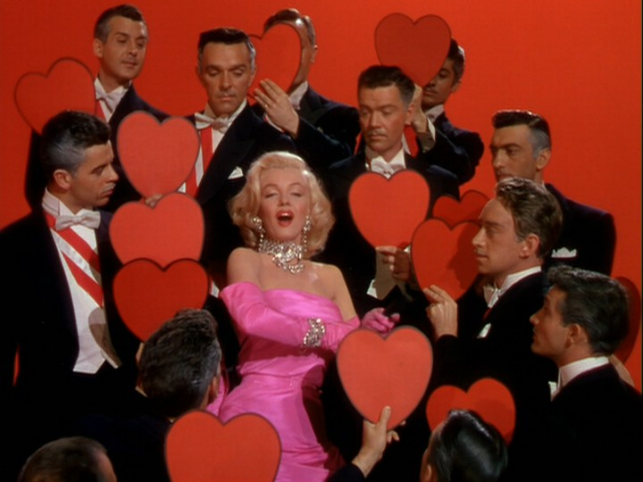
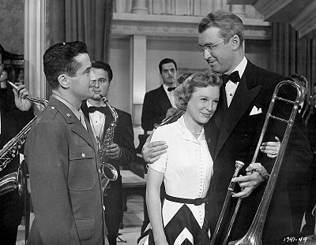
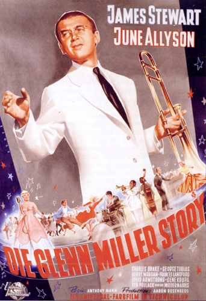
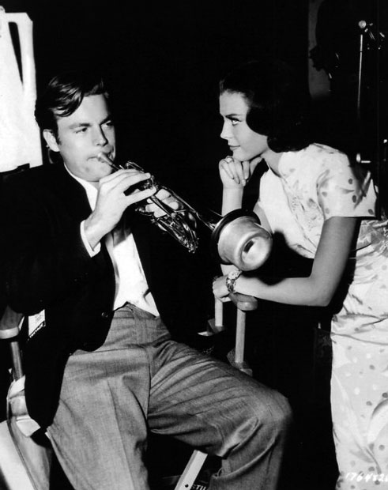
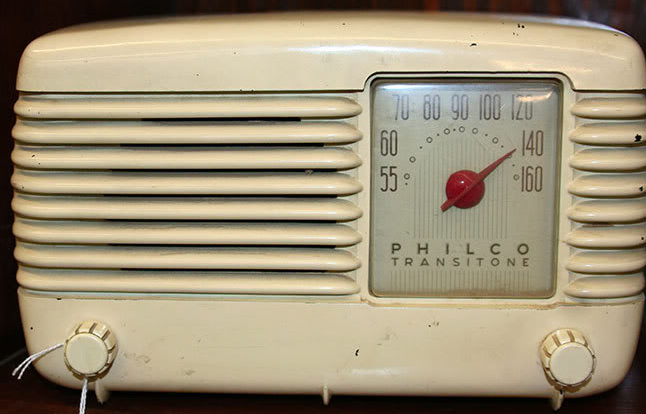

Jazz and I
It began with the Movies
|
I
am
not sure when my interest in jazz music started, but I am sure it was
early in my life and it started with cinema.
My mother used to take me to cinema as soon as I was able to walk. She loved to see new movies and I was her passport to avoid unwanted attention in a male dominated society of the time. The music in these movies where different kinds of jazz, mostly big band. This was before rock n' roll started to be known in Iran. I remember the films like Gentlemen Prefer Blondes (1953) with the song Diamonds Are a Girl's Best Friend. I looked with fascination to the trombone players on the big screen. Before
the film was started, they usually played contemporary hits of the
time, which were usually Latin American music; pieces by Perez Prado
and the like. The orchestration and the color of the music was engraved
in my heart.
|
 |
|  |
Then
I saw The Glenn Miller Story,
a 1954 film. I think it was a 1957 or 1958 re-screening of the film in
Tehran. I vaguely remember my mother telling me about the kind of music
that was played in the movie, and I think that was when I first
heard
the word jazz. I vividly remember the scene when their
plane
was crashing and Glenn (James Stewart) and the band
played on, and
the camera tilted to show the crashing plane is diving to its sad fate.
After that film I saw a mock-trombone in a toy shop and my parents bought it for me. I was disappointed later when I noticed that unlike the real thing the tube was not long enough to go behind my head when I am playing it.
|
 |
| Then
there was this Natalie Wood film All the Fine Young Cannibals
(1960) with the story about a
trumpet player (loosely based on Chet Baker) played by Robert Wagner.
There was a
jazz funeral scene in the film, and I remember the amused reaction of
the crowd in the cinema to the song's change of tempo and mood from
somber to jubilant. I remember I enjoyed the music in the film,
and when we were home I tried to play similar style music on my toy
trombone. That didn't work and I was content playing songs in the vain
of Summertime with my lips, imitating a trumpet. |
 |
Jazz on the Radio and TV
|  |
Television came to Iran in 1958. Radio had
appeared much earlier, in the 1930s. But the first jazz programme was
aired
in Iran in the early 1960s. Fereydoon Farhat had a weekly radio show
called Jazz, the Music of Blacks. He selected nice mainstream
jazz albums and briefly introduced the musicians. Another Jazz programme was presented by
Fereydoon Naseri. He was an
educated classical musician who later became a well known classical
music conductor in Iran, but at that time he used to play in the Tehran
Philharmonic Orchestra, and also produced musical programmes for the
radio. His weekly Jazz show was
called Jazz, the Music of Our
Century. It was through Naseri's show that I found King Oliver and
especially Charlie Parker.
Almost at the same time AFRTS, the American military corps radio was playing jazz on a weekly basis. I used to listen to Bobby Troup's show All That Jazz on that station. AFRTS also operated a television channel in Tehran. The series Peter Gunn was shown on this channel for a while and I liked its music, including the main title written by Henry Mancini. The 1979 revolution ended the jazz shows of the Iranian radio. I had to listen, through heavy static, to The Jazz Hour, Willis Conover's show on the VOA. |
The Beethoven Music Store
In 1960s and early 70s the Beethoven
Record Store was the best music shop in Iran. Karim and
Rahim Chamanara, two Iranian turk brothers, with their tasteful
aversion to
music, and good business sense, managed the shop and provided nice
classical, jazz and pop LPs for their customers. The sound system at
their store was so good I used to go there and pretending to be
interested to buy, listened to some tracks of my favorite jazz
LPs.
|

Copyright © Ali Parsa 2013
All rights reserved